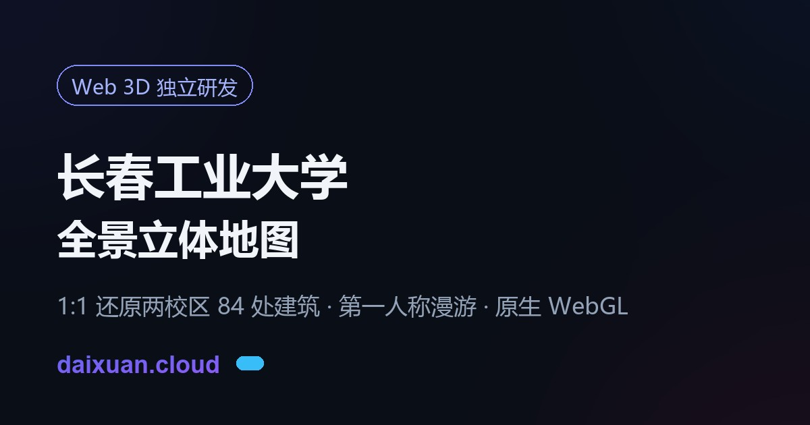
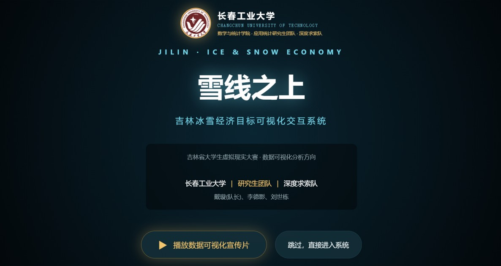
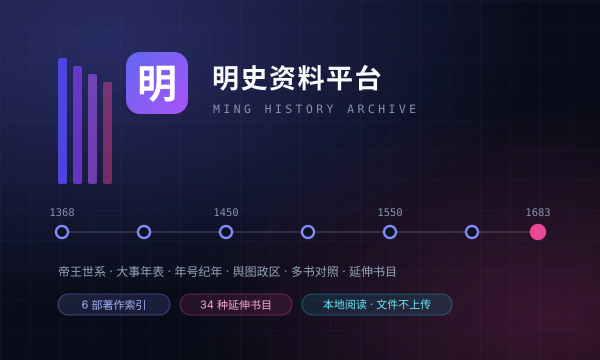

雪线之上 · 吉林冰雪经济目标可视化交互系统
围绕一个可实证核验的严肃课题展开：吉林省冰雪经济政策提出了哪些阶段目标？这些目标由哪些空间场景与供给端任务支撑？ 系统以政策规划目标科学比对、重点区域场景矩阵、刚性供给任务指标、VR 沉浸式场景原型构成四维立体叙事闭环， 所有数据严格采信《吉林省人民政府公报》公开文件，明确标定「规划目标值，非实际业绩」。
具备工业工程（IE）现场实战与高等应用统计建模复合背景。熟练掌握时间序列预测、高等数理统计、R/Python 科学计算与 5000 次蒙特卡洛应力测试；兼具 Web 3D 虚拟现实数字孪生系统独立研发能力。

CORE_MEMORY // LINK84 栋测绘单体 · 第一人称漫游

LIFE_MATRIX // SYNC点亮每一颗星星 · 纪念来过的足迹
工业工程工科底色与高等应用统计量化分析的深度融合，恪守工程真诚与数据实证。
数理与工科复合沉淀 · 追求底层复利增长
坚持工科现场工程筑基与高维统计建模深耕。从扎实推导每一道数理公式到雕琢每一行工程代码，以极强自律与专注持续沉淀学术模型与技术作品，构建核心竞争力护城河。
现场作业测定与消除浪费 · 工程真诚主义
在一汽丰田发动机工厂装配线运用秒表作业测定与动作分析梳理消除非增值活动（MUDA），主导 AGV 物流交叉动线优化；在派格塑料攻坚注塑车间 VOCs 环境质量改造与风机选型。
Three.js / WebGL 原生研发 · 数字化空间孪生
结合遥感测绘 1:1 独立三维建模还原长春工大两大校区 84 处建筑单体，实现 WebGL 原生高性能第一人称漫游，Draw Call 极限压降 53%；主研《雪线之上》吉林冰雪经济多维时空可视化大屏。
拒绝浮夸假设 · 恪守统计推导与严密实证
系统接受高等数理统计与应用概率严格训练，熟练掌握时间序列分析 (ARIMA/GARCH)、面板计量模型、生存分析与因果推断。搭建 10+ 学术级模型并完成 5000 次蒙特卡洛应力测试。
深耕大型统计计算、高维时序分析与宏观因果计量。作为核心主研设计《雪线之上·吉林冰雪经济目标可视化交互系统》，基于吉林省地级市面板数据构建 Panel-VAR 与蒙特卡洛应力测试，打通理论推导与工程落地的完整价值闭环。
系统打下机械制造基础、生产系统建模、运筹优化及现场工业工程改善方法。深入一汽丰田发动机工厂主导装配产线作业测定与 AGV 路径优化；在长春派格塑料攻关注塑车间环境质量改造与屋顶风机选型。独立研发《长春工业大学·全景立体地图》（Three.js），实现 84 处建筑 3D 实测漫游。
在水乡湖州打下扎实的数理功底。早期对几何空间、计算机代码与三维逻辑产生浓厚兴趣，从最初编写简单的自动化脚本到探索算法设计，树立了以数字化工具重构现实世界的初心。
知名制造企业的现场改善与工程优化实战。
按领域解构与重组，贯通统计计算、精益制造、Web 3D 与宏观可视化的复合能力池。
高等数理统计、时间序列预测 (ARIMA/GARCH)、生存分析 Cox 比例风险模型与信用风险评分卡。具备从严谨推导到 5000 次蒙特卡洛应力测试的全流程能力。
深扎一线制造现场。运用秒表作业测定与动作分析梳理消除 MUDA；主导 AGV 路径规划简化交叉动线；攻坚车间 VOCs 环境质量改造与通风工程选型。
Three.js 原生研发长春工业大学 3D 校园全景，遥感测绘 1:1 还原 84 处建筑单体，极致几何合批；支持第一人称沉浸式漫游、动态视锥剔除与全端适配。
主研《雪线之上·吉林冰雪经济目标可视化交互系统》。结合吉林省地级市面板数据构建宏观沙盘、多维雷达图与沉浸式数据流播，融汇专业统计与前沿视觉。
在创新创业、数学建模、大数据挑战与工程设计赛场上的斩获。
数据可视化分析赛道 · 长春工业大学数学与统计学院应用统计研究生团队（深度求索队）
围绕一个可实证核验的严肃课题展开：吉林省冰雪经济政策提出了哪些阶段目标？这些目标由哪些空间场景与供给端任务支撑？ 系统以政策规划目标科学比对、重点区域场景矩阵、刚性供给任务指标、VR 沉浸式场景原型构成四维立体叙事闭环， 所有数据严格采信《吉林省人民政府公报》公开文件，明确标定「规划目标值，非实际业绩」。
自主实现的原生 Canvas 2D 透视投影高程网格算法，程序化生成长白山天池火山口与环峰示意地貌，支持全向拖拽旋转、滚轮缩放与地标脉冲联动。
不借助 D3.js / ECharts / Three.js 等任何第三方库，全程以原生贝塞尔曲线、多边形裁剪与投影计算渲染，涵盖 OLS 回归置信区间、Wilson 空间引力模型、桑基流向图与蒙特卡洛扇形预测区。
一键切换双目分屏渲染，自主推演双目光学中心与 64mm 瞳距视差；Web Audio API 程序化合成高寒冬风滤波白噪音与 8 频段实时频谱仪，兼容 Google Cardboard 及主流头显。
省域时序 OLS 趋势回归（n=6）、9 市州截面双因子回归（n=9）、Wilson 空间引力、GBM 蒙特卡洛多模型并行估计。系统如实呈现模型的不确定性——OLS 显示政策锚定点落在 95% 预测区间之外，留一交叉验证暴露小样本泛化局限，与蒙特卡洛情景概率共同界定政策干预的必要性区间。
在省域时序模型（n=6）之外，引入吉林省 9 个市州的截面样本，构建「时序 + 截面」双样本结构。 对 4 个候选模型做横向比选，并进行留一交叉验证、7 项计量经济学诊断、变量共线性检验与供给端运力核验， 全面回应大赛对「科学性与分析深度」的评分要求。
ice_snow_policy_targets.csv 政策目标数据包jilin_city_panel_2024.csv 9 市州 12 维指标（长春=86，可导入复算模型 D）jilin_city_panel_2018_2024.csv 9 市州 × 6 雪季 54 观测值（可复算双向固定效应 FE）涵盖三维数字孪生、工业工程优化实践与数字化个人建设。

以《剑桥中国明代史》上下卷、《南明史》上下册、《明朝那些事儿》全九部、《万历十五年》、《明史讲义》、方志远《明代国家权力结构及运行机制》七部著作的真实目录为骨架，配 16 个栏目：帝王世系时间轴与皇族世系图（1368—1683）、149 条大事年表（按分期与类型筛选）、23 个年号与公元⇄干支换算器、6 大体系 24 个职位的明代官僚体系（中枢、部院九卿、监察科道、军事、地方、内廷，附文官品级总表与入仕途径）、7 大学派 20 位思想家的明代思想界（白沙、阳明、泰州学派、气学、东林蕺山、西学实学、明末三大儒）、权力结构（方志远全书骨架 + 皇权与相权、票拟与批红、以内制外、监察以下制上、三司→三堂→巡抚等 100 个主题，每个主题都定位到书中段落，并支持全书段落级检索）、两京十三布政使司与九边重镇、61 项数据一览（分人口田土、赋税白银、军额科举、宗藩驿传、司法刑狱、官僚编制等 11 组，逐条标注册载/估算/存疑）、12 组史学争议考辨、32 组多书对照、272 条人物制度词条、12 条主题阅读线索，另附 35 种权威著作的延伸书目（标难度与适用场景）。回答「这件事在哪本书哪一页、几种写法差在哪、这个年号是哪一年、这个官有多大、权力怎么运转、接下来该读什么」。配 全站检索（Ctrl/⌘+K）：一次搜遍 1,572 条人物、制度、事件、年号、地名、官职、思想家、主题、书目与章节，支持「王阳明」「李卓吾」「吏部尚书」这类别名，回车直达并高亮；每个条目都有稳定地址可分享。任意栏目可直接打印成讲义。附本地阅读器：把自有 PDF/TXT 拖进浏览器即可打开，文件不经过任何服务器。不转载书籍正文。

基于汽车发动机总装流水线工艺标定的 2,000 循环高保真仿真数据集，运用时间序列建模 (ARIMA)、分布拟合检验与精益 IE 动作分析，定量识别瓶颈工位跨周期自相关记忆拖滞 (φ₁=0.453)，情景推演测算产线平衡率由 84.43% 提升至 92.71%（提高 8.28 个百分点）。

基于高维信贷数据，构建了基于 Cox 比例风险、Frailty 脆弱模型及 DML 因果推断框架的中小企业信贷违约风险早期预警评估系统。

参考 lobe-chat 与 LMSYS Chatbot Arena 的纯静态 AI 工作台：智谱 GLM / DeepSeek / OpenAI / Kimi / SiliconFlow 浏览器直连，推理模型思考过程折叠展示；同一问题双模型并行对比并可投票，内置 18 个提示词模板，对话与 API Key 仅存本机浏览器。

为“华为杯”中国研究生数学建模竞赛量身打造的高可用 LaTeX 论文模板（支持 Overleaf / 本地 XeLaTeX）。深度对齐最新官方 Word 格式（西安交通大学承办），彻底解决中文字体缺失报错，内置楷体、隶书、新魏等多款中文字体包，开箱即用。

基于大规模 GPU/CPU 算力集群运行日志与资源流水数据，利用 SQLite 与高阶 SQL 提取多维算力指标；结合 Python (pandas) 对低利用率闲置算力进行精准聚类与潜在浪费成本测算，输出面向生产环境的弹性容量规划与降本增效建议。

纯原生、零构建依赖的三维校园示意地图。以公开地图数据与校区资料为参考呈现北湖与南湖校区建筑模型，支持沉浸漫游、可选卫星底图与季节场景切换；模型并非测绘成果或导航数据。

托管于 GitHub 仓库（dai123x/dai123x.github.io），绑定独立顶级域名 daixuan.cloud。支持深浅双主题切换，兼顾极速轻量与现代毛玻璃 Bento 视觉设计。

结合现场实地作业时间观测测定，拆解识别制造装配各工序非增值活动，为精益效率提供量化依据；重构简化物料供给 AGV 搬运路径网络，提升车间综合制造效能。

系统评估 VOCs、粉尘及一氧化碳环境浓度，针对进料口等结构空间限制完成设备选型与风量平衡计算，运用离心式屋顶风机方案解决厂房异味与环保废气排放指标。
行胜于言，在严谨工科推导与积极分享交流中找寻心流与成长。
实用主义 · 长期主义 · 前瞻科技
信奉实用主义，渴望以工业工程现场思维与高等应用统计为杠杆放大产能与效率；深耕长期主义，凭极强自律积累寻求底层复利；拥抱前瞻科技与 Web 3D，致力于解决真实产业痛点，创造社会价值。
爱表达分享 · 能说能写 · 能动能静
善于沟通表达与跨领域协同，在制造现场能与一线师傅紧密协作；关键时刻亦能静心钻研数理公式与系统代码架构。越输出越清醒，越分享越有动力，在复盘中实现认知的持续跃迁。
羽毛球 · 晨跑健身 · 旅行摄影 · 轻音乐
喜爱羽毛球对抗、晨跑、旅行摄影、研读前沿学术论文与前沿开源项目。在运动中磨练身心体魄，在代码与音符中领略数字世界之美，保持对世界的敏锐好奇与充沛热忱。
每一位来访的朋友，都是数字宇宙中独特的引力源。在此留下你的坐标，点亮星辰纪念来过的足迹。
在无垠的数字空间中，每一次相逢都是跨越光年的共鸣。点击下方按钮，为您在此刻点亮一颗专属星辰。
欢迎学术交流、技术探讨与工程合作
微信昵称：稜鏡
本地规则应答 · 深度对话请 打开 Aurora Chat ↗